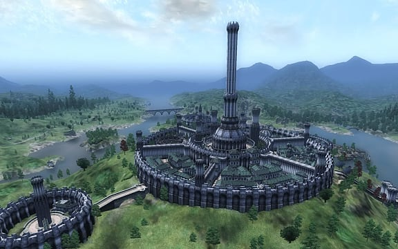
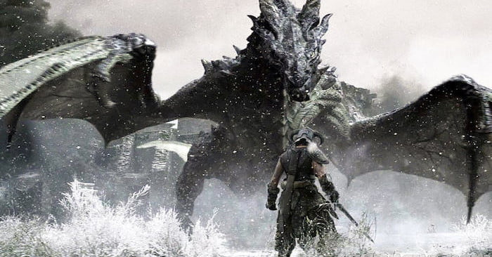

Bethesda Softworks LLC is an American video game publisher based in Rockville, Maryland.
The company was founded by Christopher Weaver in 1986 as a division of Media Technology Limited, and in 1999 became a subsidiary of ZeniMax Media.
In its first fifteen years, it was a video game developer and self-published its titles.
In 2001, Bethesda spun off its own in-house development team into Bethesda Game Studios, and Bethesda Softworks became a publisher only. It currently also publishes games by ZeniMax Online Studios, id Software, Arkane Studios, MachineGames, Tango Gameworks and Bethesda Game Studios Austin.
Fallout
The first Fallout game was created by Bethesda in 1997, putting the player in a hostile and dangerous post-apocalyptic environment in an open world exploration game where you must survive the harsh wasteland.
The most recent game, Fallout 4, was released in 2015 and shows how much the devolpers have improved from the first game, with each game taking place in a new location in America after a world-ending nuclear war, building up a backstory from across multiple games.
The next game coming out, Fallout 76, will be released November 14, 2018.
Oblivion

Bethesda released Elder Scrolls IV: Oblivion in 2006, the fourth installment of the Elder Scrolls Series.
The Elder Scrolls games take place in Tamriel, a fantasy continent that all of the Elder Scrolls games take place in. Oblivion takes place in the fictional country Cyrodil.
Oblivion's main story is about the character's efforts to stop a cult known as the Mythic Dawn that plans to open portal gates to a demonic realm known as Oblivion.
Skyrim

Bethesda released Elder Scrolls V: Skyrim in 2011, the fifth game in the Elder Scrolls games. Taking place 200 years after the events of Oblivion,
Skyrim follows the character's journey upon the return of dragons to the land, and after finding out that you are the only one with the power to kill them,
the player sets off on an adventure to rid Skyrim of dragons for good.